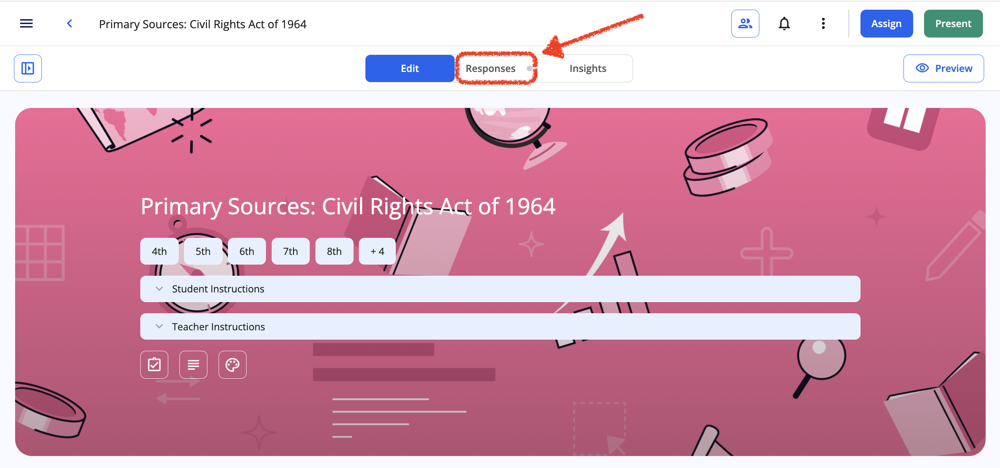

The teacher designs the evidence
The goal, task and criterion must concern the same knowledge
Goal
Understand the roles of context, parameters and token selection.
Evidence
An explanation, commented diagram, justified prediction and correction.
Criteria
Concepts and relationships; process explanation; application and checking.
Assess what the learner can justify, alongside the assisted product.
MagicSchool: draft a rubric
The teacher provides goals, assignment and constraints
Prompt / excerptPrepare a rubric for the attached assignment. Three criteria: concepts and relationships; process explanation; application and checking. Four levels with observable descriptors. Assess GenAI knowledge, without rewarding only polished prose or code. Distinguish the assisted product from the independent explanation.
- Open Rubric Generator
Enter goals and assignment, without learner personal data.
- Generate a draft
Check it against the chapter before using it.
Review the rubric descriptors
A constructed revision example, not automated assessment
Keep three criteria separate and apply the same rubric to the responses.
Too general
“Shows a good understanding of the topic”.
Observable
“Distinguishes parameters from context and explains why changing a prompt is not retraining”.
The rubric stays in the kit without Formative’s paid integrated rubric feature.
Rubric: concepts and relationships
Criterion 1 · four levels of evidence
- 1 · Needs reconstruction
Confuses training and inference, or treats probabilities as truth.
- 2 · Partial
Names concepts, but incompletely relates parameters and context.
- 3 · Coherent
Distinguishes phases and states correct relationships.
- 4 · Justified
Justifies relationships and identifies conditions and limits in a new example.
Apply the criterion to meaning in the agreed response mode.
Rubric: process explanation
Criterion 2 · make the links between stages explicit
- 1 · Absent
Repeats output without describing the stages.
- 2 · Fragmentary
Describes some stages but leaves gaps or reversals.
- 3 · Ordered
Connects input, tokens, processing, distribution and selection.
- 4 · Justified
Explains the links and separates the diagram from observed data.
A commented diagram or oral explanation can reveal the same process.
Rubric: application and checking
Criterion 3 · predict, test and revise
- 1 · Unjustified
States a conclusion without a prediction or check.
- 2 · Incomplete
Predicts, but changes multiple conditions or does not compare outcomes.
- 3 · Controlled
Varies one condition, compares the outcome and corrects an error.
- 4 · Critical
Justifies revision and recognises sampling, limitations and uncertainty.
Do not reward a lucky outcome from one generation.
Prepare questions and expected answers
The first question checks a fundamental distinction
Prompt / excerptGenerate five chapter-based questions: distinction, explanation, diagram, prediction and transfer. For each, provide the expected answer, a detectable misconception and the rubric criterion. Avoid questions answered by copying a definition.
Q1 · During ordinary inference, what changes when a new prompt is entered? A: original training data. B: calculation context. C: learned parameters.
Expected: B, with justification; a correct choice alone provides limited evidence.
A teacher-reviewed teaching example, not a validated test.
Explanation and diagram completion
Questions 2 and 3 · observe the connections
Q2 · Explain
Why does a token not always match a word? Expected: encoding may split words or represent other sequence elements.
Q3 · Complete a diagram
Complete text → tokens → model → distribution → selection. What repeats? Expected: the selected token joins the context and calculation continues.
Read correctness and explanation without requiring code.
Prediction and transfer
Questions 4 and 5 · apply a concept and recognise an error
Q4 · Predict
Same input and scores: what changes from T = 0.5 to T = 1.2? Expected: less concentrated probabilities, without a guarantee about one sampled token.
Q5 · Correct an error
“The most probable alternative will be true”. Refute using a new example. Expected: token plausibility differs from content truth.
Keep the initial prediction, test outcome and justified revision.
Formative: set up the assessment
One collection point, with clear instructions and available criteria

- Create the activity
State the goal and when materials are allowed or chat must be closed.
- Add five questions
Use multiple choice, open response and drawing in the Free plan.
- Prepare the review
Key for Q1; teacher review for explanations and diagrams.
Use the standalone kit rubric; no premium integration is needed.
Choose the format for the evidence
Three response types, three opportunities to observe
Multiple choice + reason
Identify a distinction and inspect the reasoning.
Open response
Observe explanations, predictions and corrections.
Drawing + commentary
Make the sequence and relationships visible.
Integrated audio/video responses are paid features; agree alternatives when needed.
Read three simulated responses
Invented examples for discussing teacher judgement
Profile A · complete product
The app works, but the explanation says every prompt updates parameters.
Profile B · vocabulary present
Names tokens and probabilities, but omits the link between distribution and selection.
Profile C · coherent explanation
Distinguishes phases, justifies a prediction and recognises the limit of one generation.
Read differences criterion by criterion before summarising with a grade.
Feedback that specifies the next action
Teacher-written examples address the observed difficulty
For profile A
Revisit parameters versus context. Correct the arrow and explain why.
For profile B
Add the selection rule between distribution and token. Explain the link.
For profile C
Transfer your explanation to a new context and identify what remains uncertain.
Teacher-written feedback in the Free plan, followed by a new learner attempt.
Activity: adapt an assessment
Five minutes on your subject and an access barrier
- Choose a goal · 1 minute
Name a concept you teach or study.
- Design evidence · 2 minutes
Write a task and observable criterion, allowing AI to produce the initial product.
- Remove a barrier · 2 minutes
Offer an equivalent access or response option; share the reason for your choice.
A reusable example with a coherent goal, evidence and support.